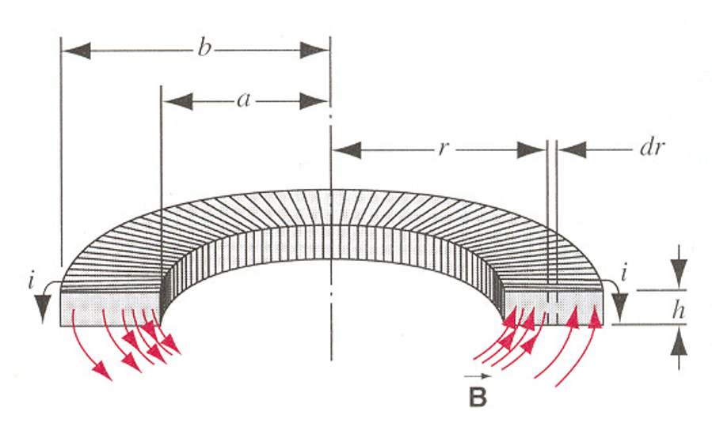

环路与面公式
定义
散度
单位体积的通量
旋度
单位面积的环量
静电场
Stokes 公式
\(\displaystyle\oint_{L} f \cdot dL= \iint_{S} (\nabla \times f)\cdot dS\)
电场环路定律
\(\displaystyle\int E\cdot dl=0\)
通过 Stokes 公式, 电场环路定律推出微分形式
\(\displaystyle\int E\cdot dl= \iint(\nabla\times E)dA\)
在静电场中有环路定律：
\(\displaystyle\int E\cdot dl=0\)
\(\displaystyle\therefore \nabla\times E = 0\)
事实上，在 Faraday 电磁感应定律中，磁通量变化时：
\(\displaystyle\int E\cdot dl= -\frac {d\Phi} {dt}=\epsilon (电势差)\)
\(\displaystyle \Phi=\oiint B\cdot dA\)
\(\displaystyle \therefore \oint E\cdot dl= -\oiint \frac{\partial B}{\partial t}\cdot dA\)
\(\displaystyle\therefore \nabla\times E = -\frac{\partial B}{\partial t}\)
Gauss 公式
\(\displaystyle\oiint_{S} f\cdot dS= \iiint_{V} (\nabla\cdot f )\cdot dV\)
Gauss 电场定理
\(\displaystyle\oiint_{S} E\cdot dS =\frac{\sum_{inside} q}{\epsilon_0}\)
通过 Gauss 公式, Gauss 电场定理推出 Gauss 电场定律微分形式
\(\displaystyle\oiint_{S} E\cdot dS =\frac{q}{\epsilon_0} =\iiint_{V} \frac{\rho}{\epsilon_0}dV=\iiint_{V} (\nabla\cdot E)dV\)
\(\displaystyle \therefore \nabla\cdot E = \frac{\rho}{\epsilon_0}\)
恒磁场
Ampere 磁场环路定律
\(\displaystyle\int B\cdot dl=\mu_0 \sum_{inside} i\)
\(\sum_{inside} i\) 指被环路包围的电流
Gauss 磁场定理
\(\displaystyle\oiint_{S} B\cdot dS =0\)
同样用两个数学公式推导出微分形式
\(\nabla \cdot B = 0\)
\(\nabla \times B = \mu_0 j\)
电偶极矩/磁偶极矩
电偶极矩
\(p = ql\)
\(\tau = p\times E\)
\(U = -p \cdot E\)
极化强度矢量 \(P=\frac{\sum p_m}V\)
\(\oiint P\cdot dA = -\sum_{in}q'\)
\(q'\) 是束缚电荷 (induced charge)
一般求 电荷 默认用 \(E\), 指明是 束缚电荷 再用 \(P\)
球坐标系: \(\rho'=-\nabla\cdot P=-\frac{1}{r^2}\frac{\partial r^2P}{\partial r}\)
柱坐标系: \(\rho'=-\nabla\cdot P=-\frac{\partial P}{\partial z}\)
\(P\cdot n = \sigma_e'\) (电荷面密度)
电位移矢量/电感应强度 \(D=\epsilon_0 E+P\)
\(\oiint D\cdot dA = \sum_{in}q_0\)
磁偶极矩
\(\mu = iA\)
\(\tau = \mu \times B\)
\(U = -\mu \cdot B\)
磁化强度矢量 \(M=\frac{\sum \mu_m}V\)
\(\oint M\cdot dl = \sum_{in}i'\)
\(M\times n = j'\) (电流线密度)
注意是线密度!
与麦克斯韦方程组的 \(\nabla \times H=j_0\) 的电流密度不同
磁场强度 \(H=\frac{B}{\mu_0}-M\)
\(\oint H\cdot dl = \sum_{in}i_0\)
电位移矢量 (电感应强度) 高斯定理
\(\displaystyle \because \oiint P\cdot dA = -\sum_{in}q'\)
\(\epsilon_0\displaystyle \oiint E\cdot dA = \sum_{in}(q'+q_0)\)
\(\displaystyle \therefore \oiint(\epsilon_0E+P)\cdot dA=q_0\)
\(\displaystyle \oiint D\cdot dA=q_0\)
磁场强度高斯定理
\(\displaystyle \because \oint M\cdot dl = \sum_{in}i'\)
\(\displaystyle \frac1{\mu_0}\oint B\cdot dl = \sum_{in}(i'+i_0)\)
\(\displaystyle \therefore \oint(\frac B{\mu_0}-M)\cdot dl=i_0\)
\(\displaystyle \oint H\cdot dl=i_0\)
| 电场强度 | 电感应强度 | 磁感应强度 | 磁场强度 |
|---|---|---|---|
| \(E\) | \(D=\epsilon_0 E+P\) | \(B\) | \(H=\frac{B}{\mu_0}-M\) |
\(D=\kappa_e \epsilon_0 E\)
\(B=\kappa_m \mu_0 H\)
介电常数
\(\kappa_e\geq 1\)
例: 圆柱形区域内, \(P=P_0z/L\), 那么得到 \(\rho'=-\nabla \cdot P = -\frac{\partial P}{\partial z}=-P_0/L\), 因此高斯定理得到\(E=-P_0z/L\), 说明 \(D=0\) 且 \(E\not =0\), 那么 \(\kappa_e=0\)

问题出在 \(D=\kappa_e \epsilon_0 E\) 这个公式只适用于各向同性的线性电介质
这句话有点抽象, 但这题的电介质大概就不满足这个条件
所以我们不能只通过 \(D=0\) 来说 \(\kappa_e=0\)
介质中的电场
有 \(\displaystyle E=\frac{E_0}{\kappa_e}\)
电流密度
单位面积电流:
\(\displaystyle j=\sigma E\)
\(\displaystyle i=\iint_A j\cdot dA\)
电源内部:
\(\displaystyle \overset{\rightarrow}j=\sigma (\overset{\rightarrow}K+\overset{\rightarrow}E)\)
\(\displaystyle \overset{\rightarrow}K\) 是非静电力, 把电荷从负极搬运到正极
能量密度
单位体积能量:
\(\displaystyle u=\frac12\frac{B^2}{\mu_0}=\frac12B\cdot H\)
\(\displaystyle u=\frac12\epsilon_0E^2=\frac12D\cdot E\)
注意这个式子太微观了, 不能直接用在点电荷上
能量
弹性势能
\(\displaystyle E=\frac12kx^2\)
动能
\(\displaystyle E=\frac12mv^2\)
电容能量
\(\displaystyle E=\frac12\frac{Q^2}{C}=\frac12CU^2=\frac12QU\)
电感能量
\(\displaystyle U=\frac12LI^2\)
\(\displaystyle U=\frac12\sum_{i}L_iI_i^2+\frac12\sum_{i,j}M_{ij}I_iI_j\)
电场能量
\(\displaystyle U=\iiint u_E dV\)
磁场能量
\(\displaystyle U=\iiint u_B dV\)
球坐标下的算子
梯度
\(\displaystyle \nabla T= \dfrac{\partial T}{\partial r}\hat{r}+\dfrac{1}{r}\dfrac{\partial T}{\partial\theta}\hat{\theta}+\dfrac{1}{\sin \theta \cdot r}\dfrac{\partial T}{\partial \phi}\hat{\phi}\)
散度
$ \displaystyle \nabla\cdot T = \frac{1}{r^2} \frac{\partial}{\partial{r}} (r^2 T_r) + \frac{1}{r\sin \theta} \frac{\partial}{\partial{\theta}} (\sin\theta T_\theta) + \frac{1}{r\sin \theta} \frac{\partial T_\phi}{\partial \phi} $
旋度
$ \displaystyle\nabla\times T = \frac{1}{r\sin \theta} \left[ \frac{\partial}{\partial{\theta}} (\sin \theta T_\phi) - \frac{\partial}{\partial{\phi}} \right] \hat{\boldsymbol{\mathbf{r}}} + \frac1r \left[\frac{1}{\sin \theta} \frac{\partial T_r}{\partial \phi} - \frac{\partial}{\partial{r}} (r T_\phi) \right] \hat{\boldsymbol{\mathbf{\theta}}} + \frac1r \left[ \frac{\partial}{\partial{r}} (r T_\theta) - \frac{\partial T_r}{\partial \theta} \right] \hat{\boldsymbol{\mathbf{\phi}}} $
柱坐标下的算子
梯度
\(\displaystyle \nabla T= \dfrac{\partial T}{\partial r}\hat{r}+\dfrac{1}{r}\dfrac{\partial T}{\partial\theta}\hat{\theta}+\dfrac{\partial T}{\partial z}\hat{z}\)
散度
\(\displaystyle \nabla \cdot T= \frac1r\dfrac{\partial (rT_r)}{\partial r}+\dfrac{1}{r}\dfrac{\partial T_{\theta}}{\partial\theta}+\dfrac{\partial T_z}{\partial z}\)
拉梅系数
电学物理量与电荷，距离关系
\(\displaystyle F=\frac{qq_0}{4\pi\epsilon_0r^2}\)
\(\displaystyle E=\frac{q}{4\pi\epsilon_0r^2}\)
\(\displaystyle U=\frac{qq_0}{4\pi\epsilon_0r}\)
\(\displaystyle V=\frac{q}{4\pi\epsilon_0r}\)
有关符号
\(\displaystyle U_b-U_a=-\int_a^b F\cdot dl\)
\(\displaystyle V_b-V_a=-\int_a^b E\cdot dl\)
\(\displaystyle E=-\frac{dV}{dl}\)
\(\displaystyle E=-\nabla \cdot V\)
\(\displaystyle f=-e(v\times B)\)
\(\displaystyle \epsilon=-\frac{d\Phi}{dt}=-M\frac{di}{dt}\)
电场强度 \(E\)
点电荷
\(\displaystyle E=\frac1{4\pi\epsilon_0}\frac{q}{r^2}\)
长直导线
\(\displaystyle E=\frac{\lambda}{2\pi \epsilon_0 r}\)
长直导线系数比较特殊
比如电场 \(E\) 分母系数是 \(2\) 不是 \(4\)
圆环
\(\displaystyle E=\frac{qz}{4\pi \epsilon_0(z^2+R^2)^{3/2}}\)
圆盘
\(\displaystyle E=\frac{2q}{4\pi \epsilon_0R^2}(1-\frac{1}{\sqrt{1+\frac{R^2}{z^2}}})=\frac{\sigma}{2\epsilon_0}(1-\frac{1}{\sqrt{1+\frac{R^2}{z^2}}})\)
就是无限大极板后乘一个系数
无限大极板
\(\displaystyle E=\frac{\sigma}{2\epsilon_0}\)
电偶极矩
从两个点电荷得出
\(\displaystyle E_y=\frac1{4\pi\epsilon_0}\frac{2Qa}{(x^2+a^2)^{3/2}}=\frac1{4\pi\epsilon_0}\frac{p}{(x^2+a^2)^{3/2}}=\frac p{4\pi\epsilon_0x^3}[1+(\frac32)(\frac ax)^2+\cdots]=\frac p{4\pi\epsilon_0x^3}\)
\(p=2Qa\)
电势能 \(U\)
球壳
面均匀分布电荷 \(q\), 电势能为 \(\displaystyle U=\frac{q^2}{8\pi\epsilon_0R}\)
一般求法
\(\displaystyle U=\int Vdq\)
\(q\) 可以是均匀分布在空间/平面的电荷
\(V\) 可以是点电荷或其他产生的电势
两两配对
\(\displaystyle U=\sum \frac{q_iq_j}{4\pi\epsilon_0r}\)
电势 \(V\)
圆环
\(\displaystyle V=\frac{q}{4\pi \epsilon_0\sqrt{z^2+R^2}}\)
圆盘
\(\displaystyle V=\frac{\sigma}{2\epsilon_0} (\sqrt{z^2+R^2}-z)\)
电容 \(C\)
球壳
空球壳
\(\displaystyle C=4\pi\epsilon_0 R\)
一般化
\(\displaystyle C=4\pi\epsilon_0 \frac{ab}{b-a}\)
平行板
\(\displaystyle C=\frac{\kappa_e\epsilon_0A}{d}=\frac{\epsilon_0A}{d}\)
圆柱体
\(\displaystyle C=\frac{2\pi\epsilon_0L}{\ln\frac ba}\)
磁感应强度 \(B\)
电流元
毕奥-萨伐尔：
\(\displaystyle B=\frac{\mu_0}{4\pi}\oint_L\frac{ids\times \hat r}{r^2}\)
受力为:
\(\displaystyle dF=ids\times B\)
长直导线
\(\displaystyle B=\frac{\mu_0i}{4\pi r}(\cos\theta_1-\cos\theta_2)\)
除了这个分母系数是 \(4\), 其他都是 \(2\)
圆环
\(\displaystyle B=\frac{\mu_0}{2}\frac{iR^2}{(R^2+z^2)^{3/2}}\)
螺线管
\(\displaystyle B=\frac12\mu_0ni(\cos\beta_1-\cos\beta_2)\)
螺绕环
\(\displaystyle B=\frac{\mu_0Ni}{2\pi r}=\mu_0ni\)
无限板
\(\displaystyle B=\frac12 \mu_0ni\)
磁偶极矩
从圆环得出
\(\displaystyle B=\frac{\mu_0iR^2}{2z^3}=\frac{\mu_0i\pi R^2}{2\pi z^3}=\frac{\mu_0iA}{2\pi z^3}=\frac{\mu_0\mu}{2\pi z^3}\)
\(\mu=iA\)
电感 \(L\), 互感 \(M\)
\(\displaystyle M=\frac{\Phi}{i}=\frac{NBA}{i}\)
\(\displaystyle \epsilon=-\frac{d\Phi}{dt}=-M\frac{di}{dt}\)
\(\displaystyle \epsilon=-L\frac{di}{dt}\)
无限长螺线管
一段 \(l\) 对应的自感
\(\displaystyle L=\mu_0n^2lA\)
长方形螺绕环

\(\displaystyle L=\frac{\mu_0n^2h}{2\pi}\ln\frac ba\)
同轴电缆
\(\displaystyle L=\frac{\mu_0}{2\pi}l\ln\frac {R_2}{R_1}\)
电感与互感
\(M=\sqrt{L_1L_2}\)
\(RC\) 电路
\(\displaystyle iR+\frac qC=\epsilon\)
\(\displaystyle \frac{dq}{dt}+\frac q{CR}=\frac{\epsilon}{R}\)
\(q=C\epsilon (1-e^{-t/RC})\)
\(RL\) 电路
通电
\(\displaystyle \epsilon +\epsilon_L=iR\)
\(\displaystyle \epsilon -L\frac{di}{dt}=iR\)
\(\displaystyle \epsilon =L\frac{di}{dt}+iR\)
解微分方程，得到通电时：
\(\displaystyle i=\frac{\epsilon}R(1-e^{-Rt/L})\)
\(\displaystyle V=\epsilon e^{-Rt/L}\) (电压)
放电
\(\displaystyle \epsilon_L=iR\)
\(\displaystyle -L\frac{di}{dt}=iR\)
\(\displaystyle 0 =L\frac{di}{dt}+iR\)
解微分方程，得到放电时：
\(\displaystyle i=\frac{\epsilon}Re^{-Rt/L}\)
\(\displaystyle V=-\epsilon e^{-Rt/L}\)
\(LC\) 电路
\(\displaystyle U=U_L+U_C=\frac 12Li^2+\frac 12\frac {q^2}{C}\)
\(\displaystyle \frac{dU}{dt}=Li\frac{di}{dt}+\frac{q}{C}\frac{dq}{dt}=0\)
\(\displaystyle Li\frac{d^2q}{dt^2}+\frac{q}{C}i=0\)
\(\displaystyle \frac{d^2q}{dt^2}+\frac{1}{LC}q=0\)
\(\displaystyle \omega = \sqrt{\frac{1}{LC}}\)
动生电动势
\(\epsilon = \int (v\times B)\cdot dl\)
\(\epsilon = lv\times B\)
\(\displaystyle \frac{lv\times B}{R}=\frac{\epsilon}{R}=i=Sj=S\sigma E\)
\(\displaystyle \therefore \frac{v\times B}{R}\cdot \frac{l}{\sigma S}=\frac{v\times B}{R}\cdot R=v\times B=E\)
注意产生的电场是非极化场, \(E_0=v\times B\)
因为有电动势也有电流, 而电流是自由电荷产生的, 不是束缚电荷
麦克斯韦方程组
修正
到上面为止，有四个方程：
\(\left\{\begin{array}{l} \displaystyle \oiint D\cdot dA=q_0 & 高斯电场定理\\ \displaystyle \oiint B\cdot dA=0& 高斯磁场定理\\ \displaystyle \oint E\cdot dl=-\iint\frac{\partial B}{\partial t}\cdot dA& 法拉第感应定律\\ \displaystyle \oint H\cdot dl=i_0=\iint j\cdot dA& 安培环路定律 \end{array}\right.\)
但是后两个式子看着不对称
既然有变化的磁场产生电场，也应该有变化的电场产生磁场
所以修正一下：
对于电容器, 如果选择极板中间作为包围电流的面, 那么包围的电流为 \(0\)
所以在极板间加入真空中的位移电流 \(i_D\)
\(\displaystyle \Phi_D=\iint D\cdot dA\)
\(\displaystyle i_D=\frac{d\Phi_D}{dt}=\iint \frac{\partial D}{\partial t}\cdot dA\)
修改真空中的安培定律: \(\displaystyle \oint H\cdot dl=i_0+i_D=\iint(j_0+\frac{\partial D}{\partial t})\cdot dA\)
积分形式
真空中：
\(\left\{\begin{array}{l} \displaystyle \oiint E\cdot dA=\frac{q}{\epsilon_0}\\ \displaystyle \oiint B\cdot dA=0\\ \displaystyle \oint E\cdot dl=-\iint\frac{\partial B}{\partial t}\cdot dA\\ \displaystyle \oint B\cdot dl=\mu_0i+\mu_0\epsilon_0\iint \frac{\partial E}{\partial t}\cdot dA \end{array}\right.\)
介质中：
\(\left\{\begin{array}{l} \displaystyle \oiint D\cdot dA=q_0\\ \displaystyle \oiint B\cdot dA=0\\ \displaystyle \oint E\cdot dl=-\iint\frac{\partial B}{\partial t}\cdot dA\\ \displaystyle \oint H\cdot dl=i_0+\iint\frac{\partial D}{\partial t}\cdot dA=\iint (j_0+\frac{\partial D}{\partial t})\cdot dA \end{array}\right.\)
微分形式:
真空中：
\(\left\{\begin{array}{l} \displaystyle \nabla\cdot E = \frac{\rho}{\epsilon_0}\\ \displaystyle \nabla\cdot B=0\\ \displaystyle \nabla\times E=-\frac{\partial B}{\partial t}\\ \displaystyle \nabla\times B=\mu_0j+\mu_0\epsilon_0 \frac{\partial E}{\partial t} \end{array}\right.\)
介质中：
\(\left\{\begin{array}{l} \displaystyle \nabla\cdot D = \rho_0\\ \displaystyle \nabla\cdot B=0\\ \displaystyle \nabla\times E=-\frac{\partial B}{\partial t}\\ \displaystyle \nabla\times H=j_0+ \frac{\partial D}{\partial t} \end{array}\right.\)
电磁波
电磁波的性质
- 横波
- \(\overset{\to}E \bot\overset{\to}H\)
- \(E,H\) 同相位
- \(\sqrt{\kappa_e\epsilon_0}E_0=\sqrt{\kappa_m\mu_0}H_0\)
- \(\displaystyle v=\frac{1}{\sqrt{\kappa_e\epsilon_0\kappa_m\mu_0}}\)
真空中可以由性质 4 推出 \(E_0=\frac{B_0}{c}\)
1. 横波
波源为圆心取一个球面, 任意一点 \(E,H\) 相等
取一个小的近似平面, 为 \(x,y\) 平面, 由于任意一点 \(E,H\) 相等, 则 \(E,H\) 与 \(x,y\) 无关
To be continued
波印廷矢量
poynting vector
\(S=E\times H\)
垂直导线方向为 \(i^2R\)
平行导线方向为 \(i\epsilon\)
导线为导体, 所以表面有电荷
所以既有向内生热, 又有向前传给电阻做功


电源电场为反方向, 所以有向外的 \(S\), 这是在向外传递能量, 沿着导线传给电阻

电阻周围正负电荷抵消, 所以没有能量传递, 只有生热:

最后整个图:

电阻
\(\overset{\to}S\) 向内
\(\displaystyle -\oiint \overset{\to}S\cdot dA= \oiint S\cdot dA=i^2R\)
电容
\(\overset{\to}S\) 向内
\(\displaystyle -\oiint \overset{\to}S\cdot dA= \oiint S\cdot dA=\frac{dU}{dt}=Ad\frac{d}{dt}(\frac12 \epsilon_0 E^2)\)
电磁波的能量
\(\displaystyle \frac{dU}{dt}=-\oiint (E\times H)\cdot dA-\iiint(j_0\cdot E)\cdot dV\)
\(\displaystyle j_0=\sigma(E+K),E=\rho j_0-K\)
\(\displaystyle \therefore \iiint(j_0\cdot E)\cdot dV=(j_0\cdot E)\cdot \Delta A\Delta l=\rho j_0^2\Delta A\Delta l - (j_0\Delta A)\cdot (K\Delta l)\)
\(\displaystyle =\rho\frac{\Delta l}{\Delta A}(j_0\Delta A)^2-(j_0\Delta A)\cdot (K\Delta l)\)
\(\displaystyle =i_0^2R-i_0\Delta \epsilon\)
\(\displaystyle \frac{dU}{dt}=-\oiint S\cdot dA-Q+P\)
\(\displaystyle S=E\times H=\frac{E\times B}{\mu_0}=\frac{EB}{\mu_0}=\frac{E^2}{\mu_0c}=\frac{E^2}{377\Omega}\)
强度是最大值的均方根:
\(\displaystyle I=\langle S\rangle=\frac12 \frac{E^2}{377\Omega}\)
\(\displaystyle u=\frac 12\epsilon_0E^2+\frac{B^2}{2\mu_0}=\epsilon_0E^2\)
所以 \(\displaystyle \langle u\rangle=\frac{\epsilon_0E^2}{2}\)
\(\displaystyle I=c\langle u\rangle\)
同时给出功率 \(P\) 与当前位置所在球面 \(4\pi r^2\), 则 \(I=\frac{P}{4\pi r^2}\)
光压
\(P=\frac1c (|S_{in}|+|S_{ref}|)\)
全部反射: \(P=\frac 2c(EH)\)
全部吸收: \(P=\frac 1c(EH)\)
动量密度
\(\displaystyle g=\frac{1}{c^2}S=\frac{1}{c^2}(E\times H)\)
几何光学
焦距
\(\displaystyle \frac{n'}{i}+\frac{n}{o}=\frac{n'-n}{r}\)
令 \(\displaystyle i\to\infty,o=f=\frac{n}{n'-n}r\)
令 \(\displaystyle o\to\infty,i=f'=\frac{n'}{n'-n}r\)
\(\displaystyle \therefore \frac{f'}{f}=\frac{n'}{n},\frac{f'}{i}+\frac{f}{o}=1\)
\(o=object, i=image\)
球面镜成像

\(n\sin\theta = n'\sin\theta'\)
\(n=-n'\)
\(\displaystyle f'=\frac{n'}{n'-n}r=\frac{r}{2}\)
\(\displaystyle f=\frac{n}{n'-n}r=-\frac{r}{2}\)
\(\displaystyle \therefore \frac{1}{o}+\frac{1}{i}=-\frac{2}{r}\)
磨镜者公式

\(\displaystyle f'=\frac{n'}{\frac{n_L-n}{r_1}+\frac{n'-n_L}{r_2}}\)
\(\displaystyle f=\frac{n}{\frac{n_L-n}{r_1}+\frac{n'-n_L}{r_2}}\)
当 \(n'=n=1\)
\(\displaystyle f=f'=\frac{1}{(n_L-1)(\frac1{r_1}-\frac1{r_2})}\)
光学的费马定理
叙述
\(\displaystyle \delta(PQ) = \delta(\int_P^Q n\cdot dl)=0\)
这说明了：
1. 将 \(\displaystyle \int_P^Q n\cdot dl\) 看作函数，对其中任意变量求偏导，结果为 \(0\)
2. \(\displaystyle t_{QP}= \frac 1c \int_P^Q n\cdot dl\), 则时间只能取极值或为常值
语言描述就是：光走的路径是用时最短的路径
这也说明第二条性质中，时间取的是极小值
下面给出数学的变分定义，并详细说明这两条性质
数学
泛函
泛函是从函数组成的向量空间到标量域的映射
线性代数里的线性泛函就是从向量空间映射到数域
一般的泛函将函数映射到实数域
例如对于函数做定积分，得到一个实数值，那么这个积分就是对于函数的泛函
变分
微分是变量的变化量，比如自变量从 \(x\) 变化到 \(x+\Delta x\), 变化量为 \(dx=\Delta x\)
而变分是指函数的变化量，比如自变量函数从 \(y(x)\) 变化到 \(y(x) + \Delta y(x)\), 变化量为 \(\delta y=\Delta y\)， 也可写成 \(\delta y(x)=\Delta y(x)\)
变量的变化量是一个值，函数的变化量是一个函数。所以感性理解一下，微分是针对函数的，变分是针对泛函的
更具体/严格定义变分，应该长成类似这样：
如果函数从 \(y(x)\) 变化到 \(y(x)+\epsilon \eta(x)\), 那么 \(\delta y= \epsilon \eta\), 其中 \(\epsilon\) 是一个变量
具体见 wiki
Euler-Lagrange 方程
一般的方程为:
\(\displaystyle I=\int_a^b F(x, y, y') dx\)
如果 \(F(x, y, y')=f(y, y')\), 并且 \(\frac{\partial F}{\partial x}=0\), 即 \(F\) 不显含 \(x\)
则方程写成:
\(\displaystyle I=\int_a^b f(y, y') dx\)
\(I\) 是函数 \(y(x)\) 的一个泛函
我们想要找到一个函数 \(y(x)\) 使得 \(I\) 取极值
也就是找到 \(y(x)\) 使得 \(\delta I=0\)
事实上，这样的 \(y(x)\) 满足 Euler-Lagrange 方程:
\(\displaystyle \frac{\partial f}{\partial y}-\frac{d}{dx}\left( \frac{\partial f}{\partial y'}\right)=0\)
同时，在 \(F\) 不显含 \(x\) 时，有等价的式子:
\(\displaystyle \frac{d}{dx}(F-y'\frac{\partial F}{\partial y'})=\frac{\partial F}{\partial x}+\frac{dy}{dx}\cdot \frac{\partial F}{\partial y}+\frac{dy'}{dx}\cdot \frac{\partial F}{\partial y'}-\frac{dy'}{dx}\cdot \frac{\partial F}{\partial y'}-y'\frac{d}{dx}(\frac{\partial F}{\partial y'})\)
\(\displaystyle =\frac{\partial F}{\partial x}+y'[\frac{\partial F}{\partial y}-\frac{d}{dx}(\frac{\partial F}{\partial y'})]=y'[\frac{\partial F}{\partial y}-\frac{d}{dx}(\frac{\partial F}{\partial y'})]\)
若 \(y'\not=0\), 则 \(\displaystyle \frac{\partial F}{\partial y}-\frac{d}{dx}(\frac{\partial F}{\partial y'})=0\) 等价于
应用到费马定理
费马定理中，\(\displaystyle I=\int_P^Qn\cdot dl=\int_{x_1}^{x_2}n(y)\cdot \sqrt{1+y'(x)^2}dx\)
\(n(y)\) 一般是分段常值函数
\(\displaystyle f(y,y')=n(y)\cdot \sqrt{1+y'^2}\), 所以代入上面的式子
\(\displaystyle F-y'\frac{\partial F}{\partial y'}=n(y)\cdot \sqrt{1+y'^2}-y'\cdot n(y)\cdot \frac{y'}{\sqrt{1+y'^2}}=\frac{n(y)}{\sqrt{1+y'^2}}=c\)
若路径与铅垂线夹角为 \(\theta\), 那么 \(\displaystyle \cot \theta = \frac{dy}{dx}, \sin \theta = \frac{1}{\sqrt{1+y'^2}}\)
首先，对于反射定律:
由于 \(n(y)\) 不变，所以 \(\sin\theta=\frac{n(y)}{c}\) 不变，所以 \(\sin\theta_1=\sin\theta_1'\)
其次，对于折射定律:
\(n(y)\sin \theta=c\), 即如果 \(n\) 是位置的连续函数，则 \(n(y)\sin \theta\) 是一个常数
这可以得到折射定律: \(n_1\sin\theta_1=n_2\sin\theta_2\)
此外还可以得到大气中光线轨迹的微分方程：\(\displaystyle \frac{dy}{dx}=\frac1c\cdot \sqrt{n(y)^2-c^2}\)
干涉
杨氏双缝干涉
相干: \(d\sin\theta = m\lambda,y=L\tan\theta \approx L\sin\theta=\frac{m\lambda L}{d}\)
相消: \(d\sin\theta = (m+\frac 12)\lambda,y=L\tan\theta \approx L\sin\theta=\frac{(m+\frac 12)\lambda L}{d}\)
半波损
光疏到光密有半波损
\(n_1<n_2\)
半波损说明相位落后 \(\frac{\lambda}2\)
相位领先 \(\phi\) 说明要 \(-\phi\)
\(\cos(kx+wt)\to \cos(kx+wt-\phi)\)
等倾薄膜干涉

\(2nh\cos i=m\lambda, maxima\)
\(2nh\cos i=(m+\frac12)\lambda, minima\)
对于垂直入射:
-
只有前反射面有半波损: \(2nd+\frac12\lambda = m\lambda\)
-
前后反射面都有半波损: \(2nd = m\lambda\)
等厚薄膜干涉

\(2nh\cos i=m\lambda, maxima\)
\(2nh\cos i=(m+\frac12)\lambda, minima\)
牛顿环
通过测量球面一部分的干涉纹来计算原本球的半径

\(\Delta L = 2h+\frac\lambda 2=\left\{\begin{array}{l}m\lambda & maxima\\\\ (2m+1)\frac{\lambda}{2} & minima\end{array}\right.\)
注意由于是球面下的空气产生光程差，所以下反射面有半波损
\(h=e_k=R-\sqrt{R^2-r_k^2}\)
Michelson's Interferometer
\(\Delta L=2d=m\lambda\)
以太
如果改变装置运动的方向, 理论上来说, 两个光线的光程差会因为以太运动方向不同而改变, 因此干涉条纹变化
但实验结果是, 无论怎么转, 干涉条纹不变
所以 以太不应该存在.
解决了物理学两朵乌云的第一朵
衍射
惠更斯原理

波前的每一点可看作是新的波源
当光波遇到障碍物或狭缝时, 障碍物的边缘会成为新的波源, 从而使光波在原本的直线传播方向外传播 \(\to\) 衍射
单缝
\(n\) 条光线聚焦在一点
对应的相位差为 \(\displaystyle \alpha = \frac n2 \Delta\phi\)
且 \(\displaystyle \Delta\phi = \frac{2\pi}{\lambda} \Delta x\sin \theta=\frac{2\pi}{\lambda} \frac{a}{n}\sin \theta\)
所以 \(\displaystyle \alpha = \frac{\pi a \sin \theta}{\lambda}\)
光强是电场平方: \(\displaystyle I_\theta = E_\theta^2\)
圆弧长对应最大的电场 (因为没有向量抵消)， 弦长等于当前 \(\theta\) 对应的电场
\(E_m=\overgroup{MN}\)
\(\displaystyle E_\theta=\overline{MN}=E_m\frac{\sin\alpha}{\alpha}\)
当 \(\theta=0\), \(E_\theta\) 能取到最大, \(E_\theta = E_m\)
\(\displaystyle I_\theta=I_m(\frac{\sin\alpha}{\alpha})^2\)
极大
中间零级最大是主极大
\(a\sin\theta=m\lambda,minima\)
\(a\sin\theta\approx(m+\frac 12)\lambda,maxima\)
用 \(\frac{d}{d\alpha}(\frac{\sin\alpha}{\alpha})=0,\alpha=\tan\alpha\)
\(\alpha=\pm1.43\pi,\pm2.46\pi,\pm3.47\pi,\cdots\)
可以看到越来越接近 \(m+\frac 12\)
\(m=\frac{\alpha}{\pi}-\frac12=0.5,0.93,1.96,\cdots\)
可以看到越来越接近整数 \(1,2,\cdots\)
半角宽度
\(a\sin\theta = \lambda,\Delta\theta\approx\sin\theta=\frac{\lambda}{a}\)
\(\Delta y_m=f\cdot \Delta \theta = f\cdot \frac{\lambda}{a}\)
圆孔
一级最小: \(\sin \theta = 1.22\frac{\lambda}{D}\)
瑞利判据
分辨临界, 当最小与最大重合
\(\theta_R= \theta_{min}=1.22\frac{\lambda}{D}\)
分辨本领: \(R=\frac{1}{\theta_R}\)
双缝
\(n\) 条缝
缝与缝之间间距 \(d\)
\(\displaystyle \delta = \frac{2\pi}{\lambda}d\sin\theta=2\beta\)
\(\displaystyle \beta = \frac{\pi d\sin\theta}{\lambda}\)
\(\displaystyle E_\theta = \overline{OB_N}=2\overline{OC}\sin{N\beta}=2\frac{E_1}{2\sin\beta}\sin{N\beta}=E_1\frac{\sin N\beta}{\sin\beta}\)
\(\displaystyle E_1=E_m\frac{\sin\alpha}\alpha\)
\(\displaystyle \therefore I_\theta = I_m(\frac{\sin\alpha}{\alpha})^2(\frac{\sin N\beta}{\sin\beta})^2\)
当 \(N=2\) 时, \(\displaystyle (\frac{\sin N\beta}{\sin\beta})^2=(2\cos\beta)^2\)
\(\beta\) 是干涉项, \(\alpha\) 是衍射项
主极大
\(\beta=m\pi,d\sin\theta=m\lambda\)
两个主极大间有 \(N-1\) 个次极小, \(N-2\) 个次极大
主极大半角宽度 \(\displaystyle\Delta\theta=\frac{\lambda}{Nd\cos\theta}\approx \frac{\lambda}{Nd}\)
且由于 \(\frac{\sin\alpha}{\alpha}\), 每 \(d/a=n\) 个主极大都会出现一个主极大缺失
对于 \(d=3a,N=4\):

每两个缺失之间包含 \(2n-1\) 个主极大,成为 diffraction envelope
色散本领
由 \(d\sin\theta=m\lambda\)
\(d\cos\theta\Delta\theta=m\Delta\lambda\)
\(\displaystyle D=\frac{\Delta \theta}{\Delta \lambda}=\frac{m}{d\cos\theta}\)
表示单位波长差可以分开的两个极大的角度差
分辨本领
\(\displaystyle \Delta \theta_w=\frac{\lambda}{Nd\cos\theta}\)
\(\displaystyle \Delta \lambda = \frac{\Delta \theta_w}{D_\theta}=\frac{d\cos\theta}{m}\cdot \frac{\lambda}{Nd\cos\theta}=\frac{\lambda}{Nm}\)
分辨本领 \(\displaystyle R=\frac{\lambda}{\Delta \lambda}=Nm\)
与 \(d\) 无关, 只与 \(N,m\) 有关
代入半角宽度是因为这是最大的宽度, 所以是最严苛的条件
\(\Delta \lambda\) 表示两束光的波长差
\(\lambda\) 表示波长短的光波长
光栅
Bragg's law
晶体中 \(2d_0\sin\theta = m\lambda\)
\(d_0\) 是分子间距
在晶格中, 晶面间距 (interplanar spacing) 为 \(d=\frac{d_0}{\sqrt{h^2+k^2}}\)
\(h,k\) 互质
例如 \(h=2,k=1\):

偏振
偏振方向 = 电场方向
Law of Malus
自然光通过偏振片后光强变为 \(1/2\)
\(\displaystyle dI=I\cos^2\theta\frac{d\theta}{2\pi}\)
除以 \(2\pi\) 表示某一方向的光强期望
所以对于 \(\cos^2\theta\) 从 \([0,2\pi]\) 积分, 得到 \(\pi\), 所以 \(I'=I\pi\cdot\frac{1}{2\pi}=\frac{I}2\)
Brewster's angle

\(\tan\theta = \frac{n_2}{n_1}\)
双折射
\(O, E\) 光
\(O\) 光: 光的电场方向与光线与光轴构成的平面垂直
\(E\) 光: 光的电场方向与光线与光轴构成的平面平行
波片
\(E\) 光比 \(O\) 光领先 \(1/4, 1/2\) 个周期
领先 \(1/4\lambda, 1/2\lambda\)
光程差: \(\Delta L = (n_e-n_o)d\)
相位差: \(\Delta \phi = \frac{2\pi}{\lambda}(n_e-n_o)d\)
例如, 线偏振光:
\(E_x=E_0\sin(kz-\omega t)\)
\(E_y=E_0\sin(kz-\omega t)\)
经过 \(1/4\lambda\) 波片:
假设光轴是 \(x\) 轴

与光轴, 传播方向所成平面垂直的 \(y\) 方向为寻常光
\(A_o\) 相位不变, 即相位 \(\alpha_{slow}\to \alpha_{slow}\)
\(A_e\) 快了 \(1/4\) 周期, 即相位右移, \(\alpha_{fast}\to\alpha_{fast}-\frac{\pi}{2}\)
所以
\(E_x=E_0\sin(kz-\omega t)\)
\(E_y'=E_0\sin(kz-\omega t-\frac{\pi}{2})\)
变成圆偏振光
区分圆偏振与自然光
圆偏振与自然光通过偏振片, 转动偏振片, 光强都不变
但如果前面加一个 \(1/4\lambda\) 波片, 圆偏振光通过后变成线偏振光, 再通过偏振片有消光
而自然光通过波片是许多圆偏振光叠加, 再通过偏振片强度不变
区分所有种类的偏振光
-
单独使用偏振片
旋转偏振片
-
圆偏振光/自然光: 光强不变
- 线偏振光: 变, 有消光
-
椭圆偏振光/部分偏振光: 变, 无消光
-
使用 \(1/4\lambda\) 波片 + 偏振片
旋转偏振片
- 自然光 \(\to\) 自然光 \(\to\) 线偏振光: 光强不变
- 圆偏振光 \(\to\) 线偏振光 \(\to\) 线偏振光: 变, 有消光
- 部分偏振光 \(\to\) 部分偏振光 \(\to\) 线偏振光: 变, 无消光
- 椭圆偏振光 \(\to\) 线偏振光 \(\to\) 线偏振光: 变, 有消光
散射
原理: 光通过分子, 使价电子振动, 再发出光, 产生散射光
散射光是偏振光
光的本质
光电效应
\(h\nu=\frac12 mv^2+\phi=eV_0+\phi\)
\(\phi\) 是逸出功 (work function)
极限频率: \(h\nu_0=\phi\)
截止电压与频率关系: \(V_0=\frac{h}{e}\nu-\frac{\phi}{e}\)
黑体辐射
物理学的第二朵乌云
普朗克辐射定律
\(\displaystyle R(\lambda,T)=\frac{2\pi hc^2}{\lambda^5}\frac{1}{e^{\frac{h\nu}{kT}}-1}=\frac{2\pi hc^2}{\lambda^5}\frac{1}{e^{\frac{hc}{\lambda kT}}-1}\)
Wien's Law
当强度达到最大的波长满足: \(T\lambda_m=b\)
同时满足 \(\frac{h\nu}{kT}=2.82\)
量子力学
\(\Psi\) 函数
求函数 \(U(x)\) 的平均值:
\(\displaystyle \int_{-\infty}^{\infty}\Psi U(x)\Psi^*dx=\overline{U}(x)=\langle \Psi \vert U(x)\vert \Psi \rangle\)
Schrödinger equation
构造
1. 两种算符
能量算符 \(i \hbar \frac{\partial}{\partial t}\)
动量算符 \(-i \hbar \frac{\partial}{\partial x}=-i \hbar \nabla\)
2. 平面波方程
\(E(r,t)=E_0e^{i(kr-\omega t)}\)
3. de Broglie 关系
\(E=\hbar \omega, p=\hbar k\)
4. 开始构造
将 de Broglie 关系式带入平面波方程得出一般自由粒子波方程
\(\Psi (r,t)=Ae^{\frac i \hbar(pr-E t)}\)
又有 \(\int_{\infty}|\Psi(r,t)|^2dr=1\) 归一化，得到系数\(A=(2\pi \hbar)^{-3/2}\)
之后，将两种算符作用于波方程：
\(i \hbar \frac{\partial}{\partial t}\Psi = E\Psi\)
\(-i \hbar \nabla \Psi = p \Psi\)
动量算符作用两次：
\(- \hbar^2 \nabla^2 \Psi = p^2 \Psi\)
同除以 \(2m\) 得到：
\(- \frac{\hbar^2}{2m}\nabla^2 \Psi = \frac{p^2}{2m} \Psi\)
由于能量等于动能加势能：
\(E=\frac{p^2}{2m}+V(r,t)\)
所以 \(i \hbar \frac{\partial}{\partial t}\Psi(r,t)=(- \frac{\hbar^2}{2m} \nabla^2+V(r,t))\Psi(r,t)\)
令 Hamilton 算符为 \(\hat H=- \frac{\hbar^2}{2m} \nabla^2+V(r,t)\)
则 \(i \hbar \frac{\partial}{\partial t}\Psi(r,t)=\hat H\Psi(r,t)\) 为薛定谔方程
- 注：\(|\Psi(r,t)|^2\) 表示粒子在某位置某时间出现的概率
进一步, 将 \(\Psi(r, t)\) 展开为 \(\Psi(r)e^{-i\omega t}\)
\(i \hbar \frac{\partial}{\partial t}\Psi(r,t)=(- \frac{\hbar^2}{2m} \nabla^2+V(r,t))\Psi(r,t)\to i \hbar (-i\omega) \Psi(r)e^{-i\omega t}=(- \frac{\hbar^2}{2m} \nabla^2+V(r,t))\Psi(r)e^{-i\omega t}\)
\(\hbar\omega \Psi(r)=(- \frac{\hbar^2}{2m} \nabla^2+V(r,t))\Psi(r)\)
并且 \(V(r,t)=V(r)\)
所以 \(E \Psi(r)=(- \frac{\hbar^2}{2m} \nabla^2+V(r))\Psi(r)\) 为定态薛定谔方程
- ~~图源：Minghu Fang PPT~~